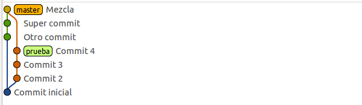
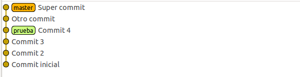
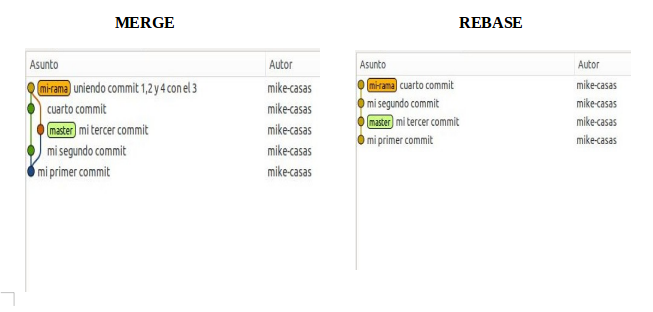

GIT
Indice
- Que es Git?
- Caracteristicas de Git
- git init
- git status
- git add
- git add -A
- git rm --cached
- git commit
- git log
- Mas sobre git log
- git diff
- git branch newBranch
- git branch
- git checkout test
- git pull origin main
- git push -u origin main
- git merge test
- git push origin --delete test
- git branch -d test
- git checkout index.html
- git rm -r --cached index.html
- git add index.html --patch
- git diff main.css
- git log --oneline
- Alias en git
- git diff --staged
- git commit --amend -m
- git reset HEAD
- git checkout -b [name_branch]
- Union de ramas en git
- git fetch
- git pull vs git fetch
¿Que es GIT?
Es una herramienta de control de versiones de codigo distribuida. Diseñada por Linus Torvalds. Este sistema distribuido nos permite tener diferentes versiones de un proyecto que puede ir cambiando a lo largo del tiempo. No depende de un solo servidor sino que cada pc, usuario o laptop tiene una copia exacta del proyecto.
Caracteristicas de GIT
- Integridad de GIT: Todo en GIT es verificado mediante un Checksum (Suma de Comprobacion), el cual es un mecanismmo conocido como hash SHA-1, es una cadena de 40 caracteres hexadecimales.
- Los 3 Estados: Los archivos en GIT tienes 3 estados fundamentales: "(Committed) Confirmado", "(Modified) Modificado" y "(Staged) Preprado".
- Committed: Implica que los archivos estan almacenados de manera segura en tu base de datos local.
- Modified: Implica que existen archivos modificados, pero que aun no estan confirmados a mi base de datos local.
- Staged: Implica que he marcado un archivo modificado en su version actual, para la proxima confirmacion.
- 3 Secciones Principales de un Proyecto GIT: Se encuentra el git directory, working directory y staging area.
- GIT directory: Almacena los metadatos y la base de datos de objetos del un proyecto. Es lo que se copia cuando se clona un repositorio desde otra computadora.
- working directory: Es una copia de una version del proyecto. Los archivos se sacan de la base de datos comprimida en el git directory.
- staging area: Es un archivo contenido en el git directory, almacena informacion acerca de lo que ira en la proxima confirmacion.
Comando "git init"
Este comando me permite inicializar un proyecto en git en la cual cuando se ejecuta el comando. Automaticamente se crea una carpeta oculta llamada .git/.
$ git init
Comando "git status"
El comando me muestra el estado de mis archivos como por ejemplo: archivos sin rastrear, archivos eliminados, archivos en el working directory, staying area y listos para el siguiente commit.
$ git status
On branch main
Your branch is up to date with 'origin/main'.
Changes not staged for commit:
(use "git add <file>..." to update what will be committed)
(use "git restore <file>..." to discard changes in working directory)
modified: GIT/GIT.md
no changes added to commit (use "git add" and/or "git commit -a")
Comando "git add [name_file]"
Este comando tiene muchas funcionalidades entre las mas utilizadas esta el poder tracked (rastrear) un archivo que esta untracked (no rastreado).
$ git add index.html
Comando "git add -A"
Permite agregar todos los archivos archivos al staging area de forma rapida
$ git add -A
Otra forma de pode agregar o rastrear nuestros archivos de forma rapida es el siguiente comando.
git add .
Comando "git rm --cached [file_name]"
Este comando permite ignorar un archivo que no queremos que valla en nuestro proximo commit o fue un error. Ademas, permite que un archivo ya no sea rastreado
$ git rm --cached main.css
Comando "git commit -m message[string]"
Permite guardar en la base de datos local el estado de nuestro proyecto, es decir los cambios que han habido, es adecuado agregar un mensaje a nuestro commit.
$ git commit -m "my first project"
Comando "git log"
Este comando me muestra el historial completos de los commits realizados a lo largo de mi proyecto. Muestra informacion como: Date, author, commiter, Message, HASH (Check Sum).
$ git log
commit 7c3fc6fac278a4e971858051501c623a95823eda (HEAD -> main, origin/main, origin/HEAD)
Author: Estiven Mayhuay <developerwebhairton@gmail.com>
Date: Tue Aug 24 08:54:53 2021 -0500
añadiendo el comando git log --oneline
Mas sobre "git log"
git log es un comando poderoso que nos permite ver cuales fueron los cambios realizados sobre un proyecto y quien los realizo.
git log -p -count
Este comando es muy util para revisiones de codigo cuando el proyecto es extenso. el flag -p me indica que veras los commits y el flag -2 es la cantidad de commit que pueden ser: 1, 2, 3, .. dependiendo la cantidad de commits realizados.
$ git log -p -2
git log --stat
Me permite visualizar las estadisticas en cada commit es decir, las inserciones y eliminaciones en un archivo.
$ git log --stat
git log --pretty=oneline
Imprime cada confirmacion en una sola linea.
$ git log pretty=oneline
git log --pretty=format
Este comando me permite personalizar la salida de los datos de cada commit
Muestra el hash de confirmacion abreviados
$ git log --pretty=format:%h
Muestra las confirmaciones padres abreviados
$ git log --pretty=format:%p
Muestra el nombre del autor
$ git log --pretty=format:%an
Muestra la direccion de correo del autor
$ git log --pretty=format:%ae
Muestra la fecha de autoria
$ git log --pretty=format:%ae
Muestra el nombre del confirmador
$ git log --pretty=format:%cn
Muestra el correo del confirmador
$ git log --pretty=format:%ce
Muestra el fecha de confirmacion
$ git log --pretty=format:%cd
Muestra el asunto o mensaje del commit
$ git log --pretty=format:%s
Otros comandos
| Opcion | Descripccion |
|---|---|
| -p | Muestra el parche introducido en cada confirmacion |
| --name-only | Muestra la lista de archivos afectados |
| --relative-date | Muestra la fecha en un formato relativo ejemplo: (2 weeks ago) |
"Con la union de estos comandos puedo hacer lo siguiente"
$ git log --pretty=format:"%h %cd %cn %ce %s" --relative-date
e73f8d0 2 minutes ago Estiven Mayhuay developerwebhairton@gmail.com Definiendo los flags de git log
ae8398b 15 minutes ago Estiven Mayhuay developerwebhairton@gmail.com New information about the commands of git
7c3fc6f 8 days ago Estiven Mayhuay developerwebhairton@gmail.com añadiendo el comando git log --oneline
f52b41b 8 days ago Estiven Mayhuay developerwebhairton@gmail.com modificando el ejemplo de git add --patch
988edc9 8 days ago Estiven Mayhuay developerwebhairton@gmail.com Subiendo el curso de git
286d78b 9 days ago Estiven Mayhuay developerwebhairton@gmail.com Añadiendo mis proyectos personales
10772a1 12 days ago Estiven Mayhuay developerwebhairton@gmail.com Corrigiendo el indice de js
7894e8d 12 days ago Estiven Mayhuay developerwebhairton@gmail.com Iterators & Generators
ce789c9 13 days ago Estiven Mayhuay developerwebhairton@gmail.com corrigiendo los titulos
bc19964 13 days ago Estiven Mayhuay developerwebhairton@gmail.com Curso de terminal
2e2d68b 2 weeks ago Estiven Mayhuay developerwebhairton@gmail.com iteratos js
f010afb 2 weeks ago Estiven Mayhuay developerwebhairton@gmail.com Añadiendo el curso de HTML5
e6e2878 3 weeks ago Estiven Mayhuay developerwebhairton@gmail.com Nuevos features de CSS3 para dark mode
404b2d3 3 weeks ago Estiven Mayhuay developerwebhairton@gmail.com Ruta de aprendizaje frontend
git diff
Muestra cuales fueron los cambios que hubieron en el repositorio principal y el que esta en mi base de datos local.
$ git diff index.html
git branch [name_branch]
Permite crear una nueva rama aparte de la main, permitiendo tener una rama aparte donde puedan hacerse pruebas.
git branch
Muestra las ramas existentes.
git checkout [name_branch]
Permite moverse entre ramas.
git pull origin [name_branch]
Este comando me permite tener la utlima version del repositorio.
$ git pull origin main
git push -u origin [name_branch]
Este comando permite subir los cambios del repositiorio local a nuestro repositorio en GitHub, se puede enviar una vez hecho el commit.
$ git push -u origin main
Dato: Se tienes el repositorio ya creado y realizado el commit puedes usar.
$ git push origin main
git branch -a
Muestra las branch's que existen de manera local y remota.
$ git branch -a
* main
remotes/origin/HEAD -> origin/main
remotes/origin/main
$ git branch -a
* main
git merge [name_branch]
Permite unir ramas. Por ejemplo, me posiciono en la rama main y mediante el comando merge convino o uno la rama test a main.
$ git merge main test
git push origin --delete [name_branch]
Elimina una rama creada en github un repositorio remoto.
git branch -d [name_branch]
Permite borrar una rama de forma local.
git checkout [name_file]
Comando nos permite reiniciar el archivo como estaba en el repositorio inicial.
git rm -r --cached [name_files]
Permite borrar la carpeta y archivos del repositorio remoto.
git add [name_file] --patch
Permite añadir a mi commit cierta parte de codigo, es decir añadir informacion por pedacitos. las banderas flag. El flag ?, me muestra mas opciones.
$ git add namefile.md --patch
git diff [file_name]
Permite ver cuales son los cambios realizados en un archivo.
$ git diff index.html
git log --oneline
Pemite mostrar el historial de commits simplificando lo que muestra el comando git log.
$ git log --oneline
08a60d2 (HEAD -> main, origin/main, origin/HEAD) add the file git mobile
2a03348 add the button go up mobile
e5e2db4 add the view js
6fb1454 add the view mobile of the js
3de08bc finish the section css3 mobile
235f802 add the view mobile of css3
e7bc84f add the view mobile of the section html5
a29ccef fix the height and width of the btnMenu mobile
73d5d5e set the view intro mobile
1b1b78e add the view mobile of the intro
6f3f764 add new html
a917f19 start new project
0dcae0c add the new gitignore
1ee8871 add the folder docs
Alias en git
En git podemos crear un alias, es decir nombres cortos que nos permitan hacer llamdas a un comando que puede ser extenso.
Creando un Alias
$ git config --global alias.logline "log --oneline"
Llamando al Alias
$ git logline
Listando los Alias
$ git config --global --list
Eliminando un Alias por su nombre
$ git config --global --unset alias.logline
Elimina todos los alias
$ git config --global --unset-all
git diff --staged [file]
Este comando a diferenci de git diff [file], el cual solo me permite ver las diferencias de los archivos solo si estan en el working directory.
En cambio el comando git diff --staged [file] me permite mostrar los archivos que ya estan listos para el siguiente commit es decir que estan en el staying area
$ git diff --staged main.css
git commit --amend -m
Este comando me permite corregir el mensaje del ultimo commit
$ git diff --amend -m "new message"
git reset HEAD
Este comando me permite retirar los archivos de mi ultimo commit del staying area al working directory.
Retirar todos los archivos del staying area
$ git reset HEAD . // first format
$ git reset HEAD^ // second format
Sacar un archivo en particular de staying area
$ git reset HEAD main.css
git checkout -b [name_branch]
Este comando me permite crear una rama y entrar en ella
$ git checkout -b test
Union de ramas en git
Exiten dos formas de poder fusionar o unir ramas en git estos comandos son: git merge y git rebase
git merge
Permite Unir una rama por ejemplo test con la rama master, para ello se requiere que ambas ramas tengan los commits listo y no haiga nada pendiente, y para su fusion se requiere de un commit.

git rebase
Sobrescribe una rama sobre la otra perdiendo el historial de commits, no genera commits basura como lo hace git merge, se recomienda usar en local, mas no en ambientes productivos

Diferencias git merget & git rebase

git fetch
Este comando me permite traer la ultima version de un respositorio remoto y traerlo a mi local pero sin combinarlos
$ git fetch
git pull vs git fetch
La principal diferencia radica en que uno combina merge de los cambios del remoto al local y el otro mantiene los cambios tanto en local como remoto